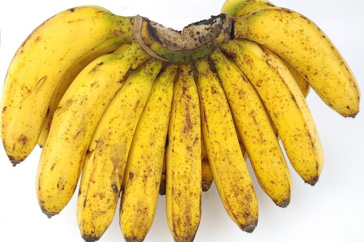

| BERANDA | BERITA | KONTAK | ABOUT |
Fakta Tentang Pisang |
|
|  | |
|
Dari beberapa penelitian diketahui bahwa buah ini sudah ada sejak 327 sebelum masehi. Kaya manfaat dan nutrisi. Diketahui bahwa buah pisang mengandung vitamin B6, protein, lemak, karbohidrat dan dan 75% kadar air. Mulai dari batang sampai nanti buahnya penuh manfaat dan nilai gunanya. |
|
Kembali |
|